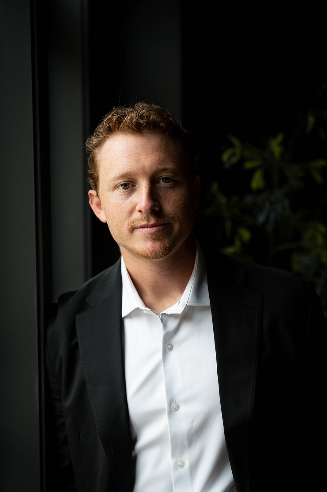

Ryan Stonehouse
Ryan Stonehouse spent four seasons in the NFL as a punter — three with the Tennessee Titans, one with the Miami Dolphins. Punting is a specialist’s job: a handful of moments a game, no second attempts, everything riding on preparation nobody watches. That’s the habit he brought with him when football ended.
Real estate was the natural next field. He started on the development side, learning properties from the dirt up — land, entitlement, construction, and what actually creates value in a finished home. Along the way he founded The Stonehouse Company, a Nashville consulting and premium representation firm working with owners, builders, and investors.
Eden Grove is the next step: a luxury sales team under Compass, built around new construction and the craftsmanship behind it. The premise is simple — Tennessee’s best homes deserve cinematic storytelling and a marketing standard that matches the work that went into them.
